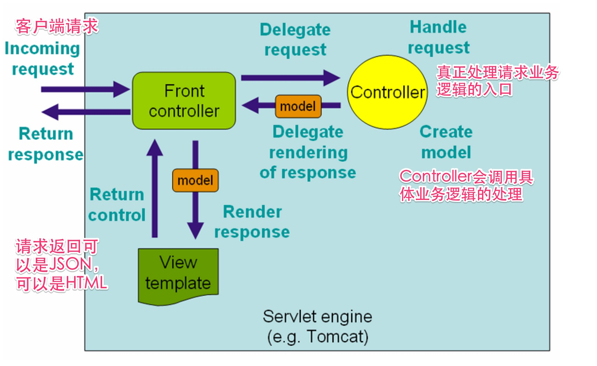

web接口自动化测试－了解接口一般实现方法
对于一般的web应用来说,一个接口往往代表了一个对外提供执行业务的服务,使得客户端和服务端可以进行交互.常见的有两大类
- HTTP/HTTPS 协议的接口
- WEB SERVICE 接口如SOAP,RMI,RPC等协议
从广义上讲,目前最主要使用场景主要有两类:
- 访问API接口(HTTP-based)获取JSON格式的数据
- 访问API接口(HTTP-based)获取服务端已经渲染好的HTML数据
WEB接口常见实现的分析
一下内容主要是介绍一些当前系统常见的一些实现方法，以便测试对于系统结构有个大致的印象.
以下是一个常见的从客户端请求到服务端返回请求的过程: 
WEB 接口常见的实现代码分析
了解一下大概的代码结构可以更加清楚被测对象，抛开所有框架层面的东西，在一个MVC架构的系统中去了解某个业务如何实现，一般就是从Controller开始， controller会连接客户请求，业务逻辑处理，以及实际的返回。
下面是一个简单的Controller实现的讲解:
- 实例代码：
@Controller
@RequestMapping("/api/fy")
public class ApiForPropertyDescController extends BaseController {
@ResponseBody
@RequestMapping(value = "/pictureDesc/show/{propertyId}", method = RequestMethod.GET)
public String showPictureDesc(@PathVariable String propertyId,
@RequestParam(required = false,value = "empNo") String empNo)
throws Exception {
Map<String, Object> resultMap = new HashMap<>();
Integer empId = Integer.valueOf(empNo);
List<PropertyPictureView> lstPropPic = fyPropertyDescVoteService.getPropertyDescPictureWithoutHouseLayout(empId, propertyId);
List<Map<String,Object>> resultListMap = filterPropertyPicture(lstPropPic);
resultMap.put("descPicturs", resultListMap);
// resultMap.put("mediaBase", ResourceMap.get("pic_root"));
return new ObjectMapper().writeValueAsString(resultMap);
}
}
以上的代码会处理请求：http://fy.Domain.org/api/fy/pictureDesc/123456643
从代码角度来分析一下以上代码注解的一些使用:
- 类级别的路径@RequestMapping("/api/fy")和方法级别的路径
- 方法级别的路径@RequestMapping(value = "/pictureDesc/show/{propertyId}" 结合：这个接口的路径是/api/fy/pictureDesc/show/{propertyId} {propertyId}实际上是个占位符，最后会被实际的值替代，也就是他其实自动化测试框架里面JSON描述文件中的
pathParameter - 从method=RequestMethod.GET得到这是个GET的请求
- 从@PathVariable，说明请求中会有一个propertyId的参数，这个参数是通过替换掉{propertyId}的值，传递到函数累不的
- 从@RequestParam 说明请求中还有又一个是empNo的参数，也就是自动化测试框架中的queryParameter，他是加载URL后面的，格式就是&key=value
- header没有特殊的说明，所以这个请求的Content-Type可以使用application/x-www-form-urlencoded 如果header有特殊说明如下:
@ResponseBody
@RequestMapping(value = "/pictureDesc/show/{propertyId}",
consumes = MediaType.APPLICATION_JSON_VALUE,
produces = MediaType.APPLICATION_JSON_VALUE,
method = RequestMethod.GET)
public String showPictureDesc(@PathVariable String propertyId,
@RequestParam(required = false,value = "empNo") String empNo)
那么这个时候表示这个接口：
- 只接受包体有JSON的请求(consumes = MediaType.APPLICATION_JSON_VALUE)
- 生产有JSON包体的返回(produces = MediaType.APPLICATION_JSON_VALUE)
- 方法上有@ReponseBody，表示这个方法的返回，会在response 的包体中
和目前自动化测试框架结合可以得到如下:
通过这个接口定义我们可以得到如下的接口描述文件：
{
"queryParameters":["empNo"
],
"pathParameters":["propertyId"],
"method":"GET",
"resourceURL":"/api/fy/pictureDesc/show/{propertyId}",
"contentType":"application/x-www-form-urlencoded",
"headers":{}
"apiDomain":"fy"
}
- 如果对于以上代码继续挖掘的话，你可以发现主要实现的业务逻辑的代码如下：
List<PropertyPictureView> lstPropPic = fyPropertyDescVoteService.getPropertyDescPictureWithoutHouseLayout(empId, propertyId);
List<Map<String,Object>> resultListMap = filterPropertyPicture(lstPropPic);
fyPropertyDescVoteService 是具体处理业务逻辑的地方，而且一般都会和数据库或者缓存打交道.通过再往下面追查，其实我们其实可以发现有些接口的逻辑其实是比较简单的，有些会复杂一点. 所以通过一些代码走查，大概也可以了解大概的业务复杂度，同时也能了解有关系的一些数据库的表,从而可以对整个功能有更全面的一些了解. 一般情况下在service类里面有会调用DAO(Data Access Object)的方法，而一般一个DAO的方法会有一个存放sql的XML对应，比如下例:
@Repository
public class PropertyDescVoteDao extends BaseDao{
public void update(PropertyDescVote propertyDescVote){
sqlSession.update("PropertyDescVoteMapper.update" , propertyDescVote);
}
}
其中PropertyDescVoteMapper.xml就是这个DAO对应存放sql的位置,update 就是对应到xml文件的id，如下例:
<update id="update" parameterType="PropertyDescVote">
update PropertyDescVote
<set>
<if test="empNo!=null">
empNo= #{empNo} ,
</if>
<if test="score!=null">
score= #{score},
</if>
<if test="voteEmpNo!=null">
voteEmpNo= #{voteEmpNo},
</if>
<if test="status!=null">
status= #{status},
</if>
<if test="flag!=null">
flag= #{flag},
</if>
<if test="remark!=null">
remark= #{remark},
</if>
<if test="votedAt!=null">
votedAt= #{votedAt},
</if>
<if test="completedAt!=null">
completedAt= #{completedAt},
</if>
<if test="votingEmpNo!=null">
votingEmpNo= #{votingEmpNo},
</if>
<if test="isPhotographer!=null">
isPhotographer= #{isPhotographer},
</if>
updatedAt= getDate(),
</set>
where id = #{id}
</update>
- 直接返回页面的实现
有些实现比如:
@Controller
@RequestMapping(value = "/fy/zrManagerForEstate")
public class ZrManagerForEstateController extends BaseController {
@Autowired
private ZrManagerForEstateService zrManagerForEstateService;
@Autowired
private FyPropertyService fyPropertyService;
@RequestMapping(method = RequestMethod.GET)
public String showView(HttpServletRequest request) throws Exception {
PortalEmployee portalEmployee = super.getSessionUser(request);
//验证权限
if(!AuthFunctions2.hasFuncAuth(portalEmployee, IAuth.功能权限_自如管家配盘)){
return "fy/common/no_access";
}
return "fy/zrManager/index";
}
}
这些代码里面基本上和之前的代码一样，不同的是最后返回:
return "fy/zrManager/index";
这样的返回表示返回了一个页面，也就是html 而不是json， 这个html的模版所在位置一般是在webapp/WEB-INF/jsp/fy/zrManager/index.jsp
至此我们常见的HTTP接口代码实现就介绍完了,后面会针对如何进行此类API测试更详细的介绍,不过我们总结以上的代码实现的话，对于一个接口测试需要测试的包括但不限于: - 接口(contract)是否按照需求文件来实现的 - 具体的业务逻辑一般都会涉及到数据库操作，数据库内容如何是否校验 - 返回值是否按照接口需求文档实现的 - .......
思考问题:那么如果每一个接口都需要登录验证会怎么办呢？